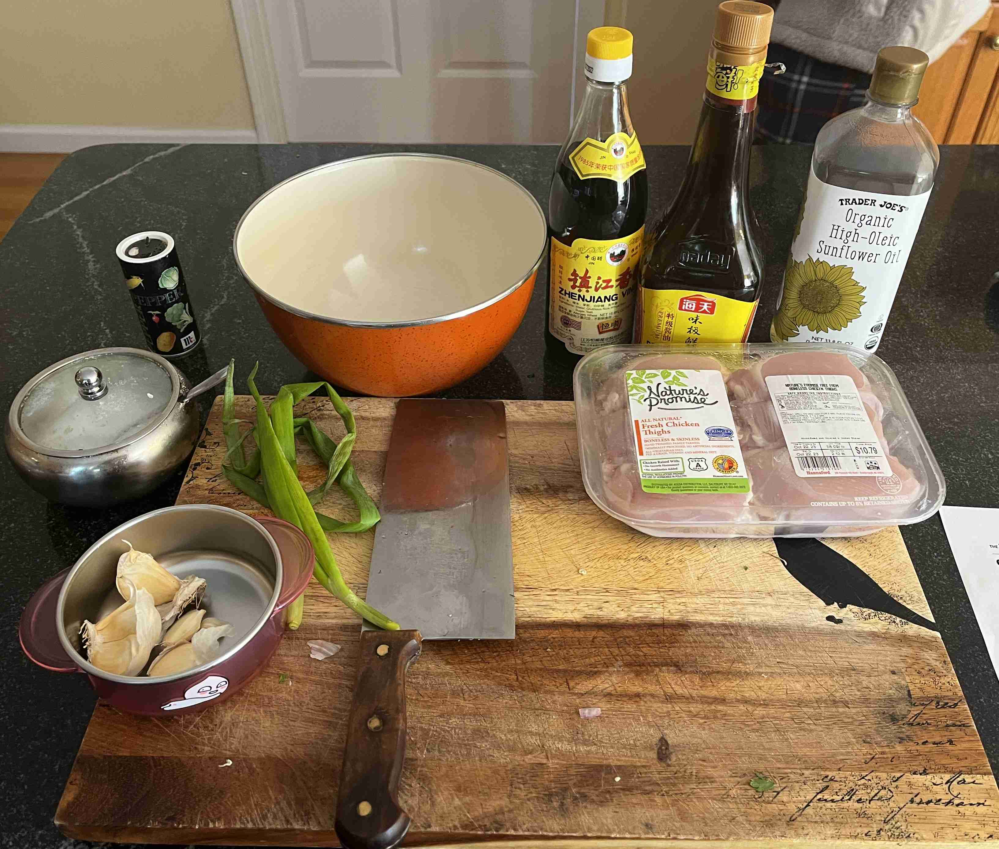
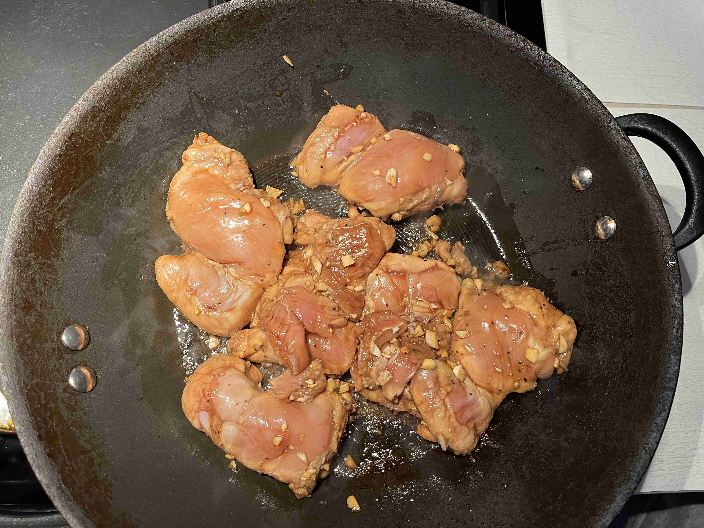
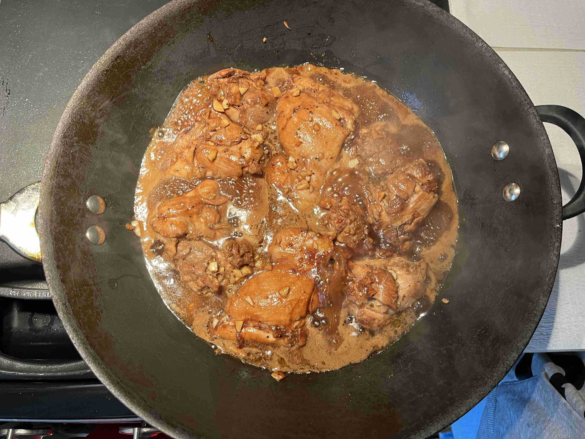
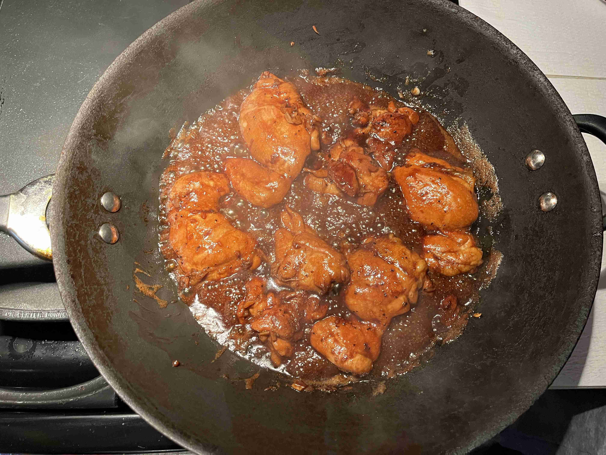
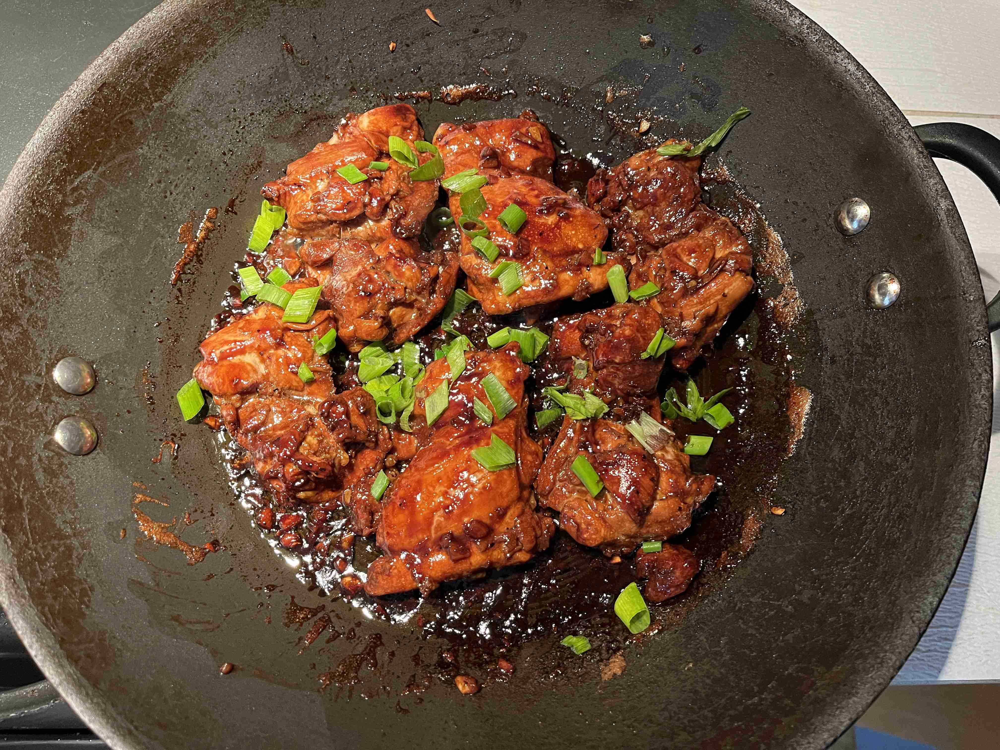

Chicken Adobo (Philippines)
-
 6 servings
6 servings
-
 1.5
hours
1.5
hours
-
 The Modern Proper
The Modern Proper
-
 Meat
Meat
-
 Umami
Umami
Cooked on October 16, 2023.
My seventeenth recipe! Chicken adobo is a popular Filipino dish that is made by marinating chicken in a mixture of vinegar, soy sauce, and garlic. The chicken is then cooked in the marinade and served with rice. The dish is easy to make yet so delicious for meal prepping!
Rating 7.5/10, the chicken was very juicy with a flavorful sauce, and the sauce goes sooo nice with white rice. I think the soy sauce was a bit too salty, and a low sodium soy sauce would have been a great alternative. Furthermore, I think the chicken could have been marinated or holes can be poked into the meat for longer to absorb more flavor.
Special equipment: Large skillet (or wok)
Marinading
1/2 cupdark vinegar1/2 cupsoy sauce8 clovesgarlic (minced)1/2 tspblack pepper1.5 tbspsugar2 lbsboneless chicken thighs

In a large bowl, combine vinegar, soy sauce, garlic, pepper, and sugar. Add chicken and toss to coat. Cover the bowl with plastic wrap and refrigerate for up to three hours.
Cooking
1 tbspcanola oil4green onions (thinly chopped)
Heat oil in a large skillet over medium-high heat. Add only chicken pieces and brown both sides for 3.5 minutes each side.

Add remaining marinade to the skillet and bring to a boil. Lower heat to maintain simmer for 1 minutes.

Flip chicken thighs. Simmer for an additional 10 minutes until sauce begins to thicken. When chicken is fully cooked, remove from heat.

Serve chicken thighs over cooked rice, sprinkled with green onions. Enjoy while hot!

Thanks to my friends for cooking this with me!
Reflecting on the recipe, after asking my dad about the soy sauce I used, I realized I used the extra salty soy sauce from Chinatown. If I used a low-sodium soy sauce, it would not have been so salty and I would have enjoyed the reicpe much more. Furthermore, I think the chicken could have been marinated or holes can be poked into the meat for longer to absorb more flavor